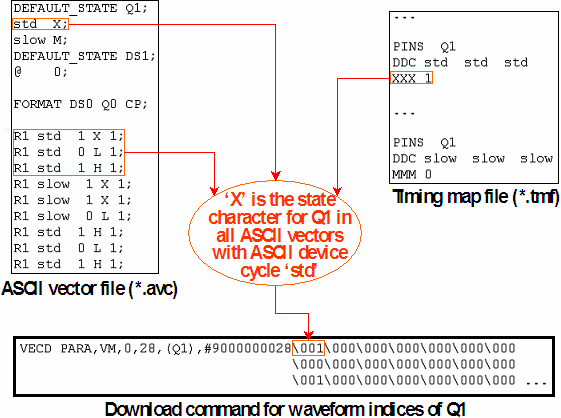

Supplying Values for Inactive Pins: The DEFAULT_STATE Statement
This statement, which must be specified before the FORMAT line, is intended to supply dummy values for pins that do not take part in in a test and do not occur in the ASCII vector table. It is organized as a table. Every row of the table specifies the dummy values for the inactive pins for one ASCII device cycle. The order of the pins is variable; it is defined by the DEFAULT_STATE line which serves as a kind of header to the table. Every row must be terminated by a semicolon.
The DEFAULT_STATE header has the following format:
DEFAULT_STATE (<pin_1>|<pin_group_1>) ... (<pin_n>|<pin_group_n>);
The table rows have the following format:
(<ASCII_dvc>|@) (<st_ch_1>|(D|R)(<st_ch_1>|<x_1>)|<list_of_st_ch_1>) ... (<st_ch_n>|(D|R)(<st_ch_n>|<x_n>)|<list_of_st_ch_n>);
The meaning of the individual components is as follows:
- <ASCII_dvc>: This statement specifies the name of the ASCII device cycle for which the default state is specified. @ is a wildcard for all ASCII device cycles.
- <st_ch_i>: Specifies a state character which is defined for <ASCII_dvc>. You can use any character as a state character except "D", "R", ";", "#", and blanks.
- (D|R)(<st_ch_i>|<x_i>): This statement specifies state characters for the pins of a pin group as specified in the DEFAULT_STATE header. You can either assign the same state character <st_ch_i> to every pin of the group, or code a separate state character for each of these pins by a single hexadecimal number <x_i>. The second case is assumed if the first character after the R or D is a hexadecimal digit, the first for all other characters. For details see Defining ASCII Vectors.
- <list_of_st_ch_i>: This format also specifies state characters for the pins of a pin group as specified in the format line, this time by specifying one state character for every pin of the group. This format must be used if some of the state characters are different from 0, 1 (for input pins) or L, H (for output pins).
You can code several DEFAULT_STATE statements in the same ASCII vector file. If there are pins which occur in more than one of these statements, the last statement will be used. Similarly, if a pin occurs in a DEFAULT_STATE statement, and also in theFORMAT line, then the DEFAULT_STATE statement will be ignored for this pin.
The following figure shows an ASCII vector file with two DEFAULT_STATE statements:
